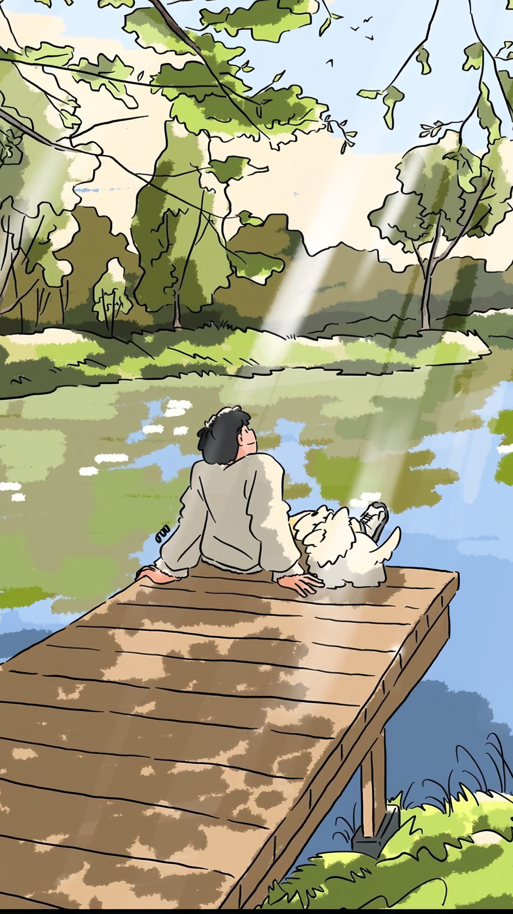

Hey, I hope this simple message finds you well. I've been meaning to share something with you that has been on my mind for a while now. Please understand that I don't expect anything in return, and so as an IT student I've created this program to simply articulate my feelings.
The interesting thing is we've never had a conversation, and perhaps that's what makes this a bit unexpected, but I couldn't keep these raging thoughts to myself any longer.
From afar, I've noticed that we seem to share common interests, and I find myself drawn not only to your captivating beauty but also to the intriguing way your mind works. It's fascinating to observe someone whose thoughts and ideas resonate with me on a deeper level.
There was a moment, perhaps fleeting, when our eyes met, and in that instant, I felt a connection that goes beyond words. It left me wondering about the stories and experiences behind those eyes, and I couldn't help but be captivated.
I think that's all I can say for now. Thank you if you've reached this far upon reading this message, and I understand if this comes as a surprise. There's no pressure for any specific response. I simply wanted to be genuine about my feelings and let you know that I admire the person you are, both inside and out.
Wishing you a wonderful day ahead ❤️